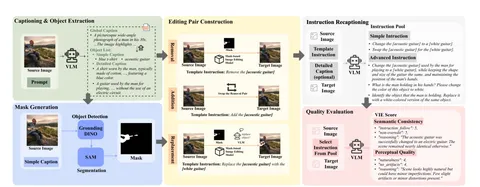

Авторы сегодняшней статьи рассказывают о том, как построили модель InsightEdit для трёх задач редактирования изображений — добавления, удаления и замены объекта. Для этого:
— собрали автоматический пайплайн генерации данных для обучения задаче редактирования изображений по промпту;
— сгенерировали с помощью этого пайплайна датасет AdvancedEdit;
— на собранном датасете обучили модель InsightEdit.
Сначала авторы сгенерировали caption для исходного набора картинок: простые описания (вида «голубая футболка») и сложные (вида «футболка на мужчине, похожая на хлопковую, содержит голубые элементы»). Потом использовали LLM, чтобы создать список объектов, сгенерировали каждому из них маску с помощью GroundedSAM и отфильтровали маски с низким скором уверенности. И, наконец, составили простые инструкции, как и что заменить, и с помощью инпейнтинга сгенерировали отредактированное изображение. А чтобы модель не переобучилась, добавили в датасет перефразированные LLM формулировки.
Такой автоматизированный пайплайн использовали для создания датасета AdvancedEdit. В качестве исходных данных взяли датасет Pixels, который содержит более 1 миллиона фотографий высокого разрешения.
Модель InsideEdit состоит из трёх модулей: понимания, объединения и генерации. Модуль понимания использует MLLM, чтобы понять по промпту, что нужно редактировать. Модуль объединения улучшает взаимодействие промпта и исходного изображения. А модуль генерации — создаёт целевое изображение: редактирует исходное, обуславливаясь векторами признаков из предыдущих модулей.
Для оценки качества обученной модели авторы сравнивают CLIPScore объекта редактирования с эмбеддингом целевого объекта. А чтобы убедиться, что модель не изменила остальные объекты, применяют PSNR, SSIM и LPIPS по фону изображения. Для более точной оценки эффектов редактирования и соответствия человеческим предпочтениям — используют VIEScore.
Обзор подготовил
CV Time
